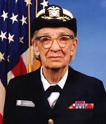

Grace Murray Hopper 1984
 Estadounidense
EstadounidenseGrace Murray Hopper (Nueva York, 9 de diciembre de 1906 - Condado de Arlington, 1 de enero de 1992) fue una científica de la computación y militar estadounidense con grado de contraalmirante.
Es pionera en el mundo de las ciencias de la computación y fue la primera programadora que utilizó el Mark I. Entre las décadas de los 50 y 60 desarrolló el primer compilador para un lenguaje de programación así como también propició métodos de validación.
En 1930 se casa con Vincent Foster Hopper, un doctor en literatura en lenguaje inglés, que durante muchos años fue presidente del departamento de inglés de la universidad de Nueva York.
Al final de su carrera profesional participó en los comités de estandarización de los lenguajes de programación COBOL y FORTRAN.
“Es más fácil pedir perdón que pedir permiso.”
| Grace Murray Hopper | |
|---|---|
|

Grace Murray Hopper 1984 |
|
| Sobrenombre | Mujer Asombrosa |
| Nacimiento | 9 de diciembre de 1906 |
| Fallecimiento | 1 de enero de 1992(85 años) |
| Nacionalidad | Estadounidense |